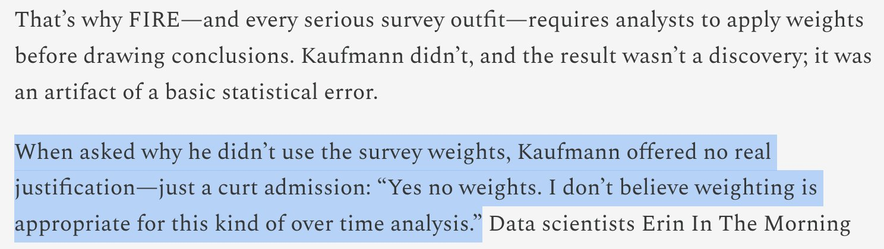
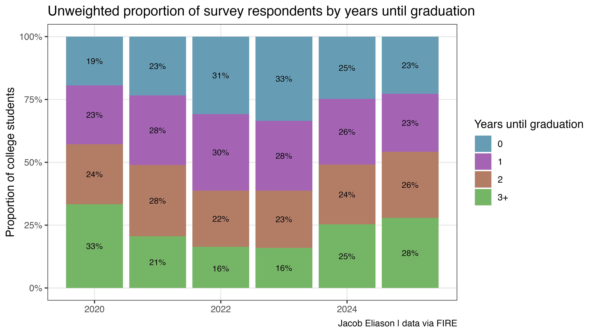

Looking closely at a surprising claim
Eric Kaufmann’s recent article on UnHerd–covered by the New York Post, RealClearPolitics, and elsewhere–claims that gender non-conforming identification among U.S. college students “has effectively halved” from 6.8% in 2022–2023 to 3.6% in 2025.
This conclusion, based on analysis of survey data collected for FIRE’s College Free Speech Rankings, suffers from several issues, including a significant analytical error I haven’t seen documented yet: Kaufmann failed to use the survey weights required to produce representative survey estimates for a panel survey like this one. Using the same dataset, I calculated both unweighted and weighted estimates of gender non-conforming identification by year. The unweighted series reproduces Kaufmann’s numbers, but the weighted series shows a different trend. I wouldn’t interpret the weighted series as the “correct answer” (discussed below), but the divergence illustrates how drastically the respondent pool apparently fluctuates year-to-year–and how analysis of this dataset in particular should not be interpreted as adding evidence for or against Kaufmann’s argument.

The organization that runs the survey uses post-stratification weighting to ensure their sample reflects the national population of college students. This is standard practice to account for issues like variable rates of survey non-response by respondent demographic. The justification for survey weighting is straightforward: even if survey invitations are sent to a representative sample from a target population (and sometimes the sampling frame is deliberately not constructed to be representative), raw survey responses are still usually not representative because, among other reasons, individuals from certain demographic groups may be more likely to respond to survey invitations. Weights rebalance the actual sample toward externally validated benchmarks so estimates better represent the population of interest. If you ignore these, you are explicitly describing the respondent pool, not the target population.
This doesn’t imply, however, that the appropriate method is simply to use the weighted series. The weighting procedure propagates assumptions the survey methodologist makes about the population’s true composition, based on trustworthy benchmarks (in this case, from CPS, NPSAS, and IPEDS). This is normal and not a bad thing, but it creates a different problem if your variable of interest happens to be one of the demographic variables used in that procedure. When the methodologist makes explicit assumptions like “Census has a very good recent estimate of the true proportion of women for our target population at X%, so we will adjust our sample until women are X%,” the weighted proportion of women in the final survey results will be, mechanically, close to X%. These weighted proportions are usually a reasonable representation of true prevalence, but only as far as the assumptions are reasonable.
In this case, FIRE’s survey showing a higher non-binary identification value in 2024 than in 2021 implies that the target they used in 2024 was higher than the target they used in 2021 (probably–this is an oversimplification). However, FIRE’s survey is about free speech. They are only interested in gender identity as far as it helps calibrate their estimates related to free speech. Survey vendors (should) regularly update their weighting targets to reflect the best available data. This is good practice for generating an accurate snapshot in a given year, but if the government’s own definitions change, a trend constructued from waves in consecutive years might artificially blow up. For example, if the source for gender moved from two gender identity choices to three, I’d expect to see something close to the observed jump in the weighted series’ value from 2023 to 2024. In fact, it looks like this is the case at IPEDS, one of the data sources for weighting.
However, this of course is not relevant to the suitability of the unweighted estimates. An analysis using unweighted counts–the realized respondent mix–in place of some weighted estimate is dead on arrival for this kind of claim about the true student population.
Kaufmann’s Response
Kaufmann responded to my initial criticism by characterizing this post (which I have expanded above and below to prevent further confusion) as an argument in favor of the weighted series. This is unfortunate, since from the outset here1, on Twitter, and elsewhere I’ve been clear that I’m not proposing the use of the weighted series in favor of the unweighted one. In focusing on debunking the weighted trend line, Kaufmann’s response does little to further justify his original approach.
He did, however, give this response to another critic:

Weighting really is “appropriate for this kind of over time analysis”
It might not be obvious why this is wrong. Nonresponse is one of a number of reasons you could make mistakes with unweighted survey data and unless you know otherwise, there’s really no expectation that the composition of a respondent pool will be stable or representative of a population over time.
Here’s an illustrating example. The following chart shows the FIRE dataset’s unweighted proportions for graduation year (gradyear; expressed for visual clarity as years from survey collection date) over time. A close inspection might identify a pattern similar to the one found in Kaufmann’s original chart. Did the proportion of American college students about to graduate surge by 74% and then collapse by 30% between 2020-2025?

Of course not. The population of college seniors is relatively stable; the swings in the chart above are artifacts of the survey panel’s composition. Just to round this point out: if the sample can accidentally capture 74% more seniors in one year than the next, it can certainly capture fewer non-binary students for reasons unrelated to real or imagined cultural shifts.
In a subsequent post, Kaufmann presented a regression analysis attempting to control for these demographic shifts. This is a more interesting approach than using raw counts, and it might register as an interesting complement if it was presented alongside evidence from a weighted probability sample. However, a regression model can only control for observed variables like race, school, or financial aid status. It relies on the assumption that non-response is random conditional on those traits. We also can’t make assumptions about whatever internal design decisions or quotas FIRE might have alternately used to construct their sample over the years. If the recruitment strategy for their panel changed at all: for example, by changing vendors or targeting different types of media channels, the type of student responding in 2025 may differ from 2023 in ways a regression on standard demographics cannot see.
This data is unfortunately not very useful for answering this question
This leaves us in kind of an unsatisfying place. The sample composition is apparently volatile–as shown by the surge and collapse of senior class respondents–and the weighted series simply mirrors what the researchers at FIRE have assumed about the population of nonbinary identifying college students.
I don’t have a strong prior belief about the direction and size of the change in proportion of trans-identifying young adults from 2023 to 2025 and am not aware of existing evidence that speaks convincingly about it one way or another (this is not to say such evidence does not exist). However, the FIRE dataset was not designed to serve this purpose, let alone as the basis of a strong claim about massive cultural shifts.
Human-authored. Code for the analysis described in this post is available here.
Footnotes
I intended the phrase ‘shows a different trend’ in my original first paragraph was not an endorsement of that different trend, but an illustration of how different the respondent mix is from the FIRE researchers’ beliefs about the population.↩︎